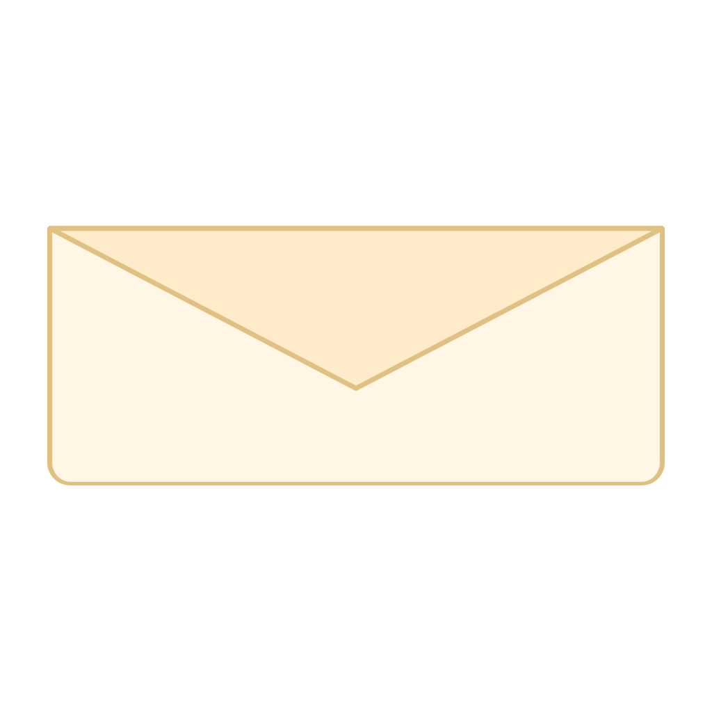

這是〈加密／解密／清單合併為單一「檔案」分頁〉這輪定案的排版 mockup，不是最終動畫細節—— 重點是驗證「清單為預設畫面＋兩顆動作按鈕」這個結構感覺順不順，
不是
驗證信封動畫本身 （那部分完整版在
8-envelope-assembled.html
）。點下面兩顆按鈕可以看兩種彈出 情境的排版差異。
檔案
＋ 新增檔案
選擇要解密的檔案
專案合約書.pdf
PDF · 2.4 MB
合約相關
2026-08-10 14:22
解密
Passkey
家庭照片備份
資料夾 · 28 個檔案
1.2 GB
2026-08-09 09:03
解密
密碼管理備份.zip
壓縮檔 · 890 KB
常用密碼
2026-08-06 21:40
解密
恢復金鑰

拖曳檔案，或
選擇檔案
＋ 繼續新增
取消
下一步
選擇要解密的檔案
給不在上面清單中的 .locked 指標檔使用（例如別人給的、或從備份還原回來的）。
指標檔路徑
選檔案
密碼
取消
解密
 檔案
檔案